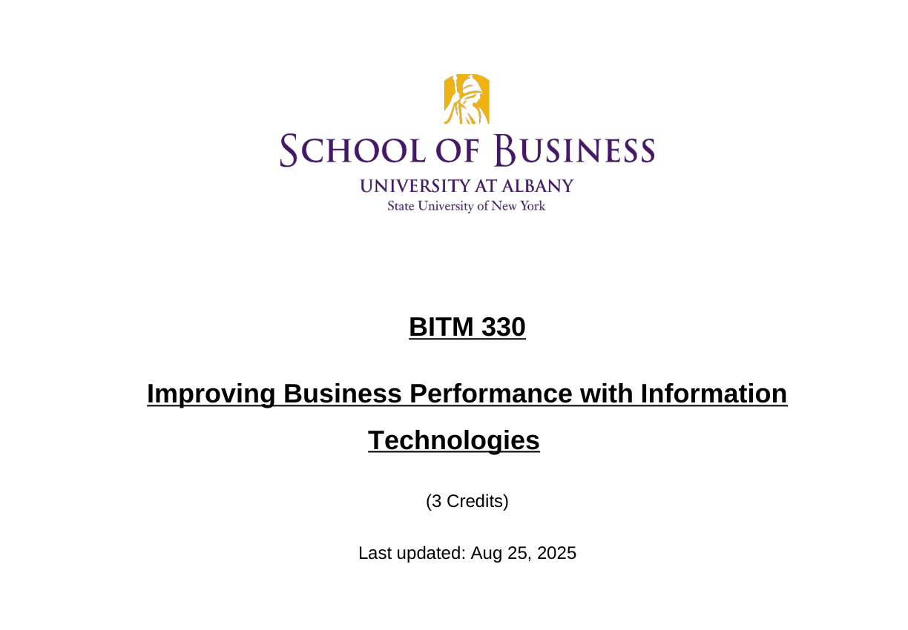
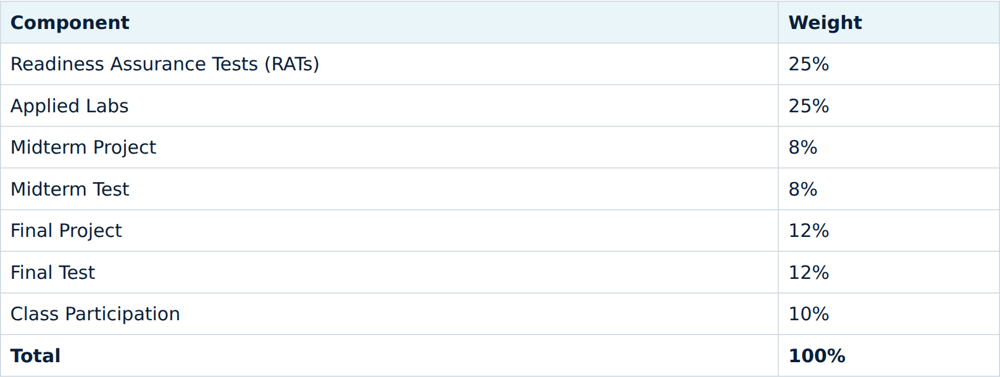
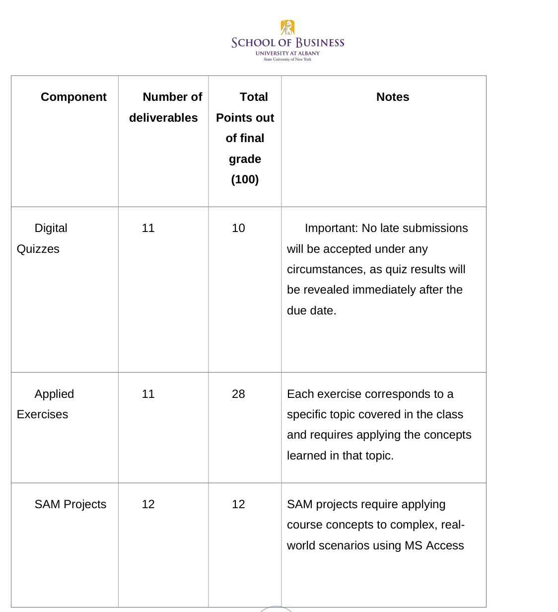

Finished result

The task
Turn a long Word syllabus into a document students can navigate in a browser. Keep conversion and semester updates separate so a visual improvement does not silently change course rules.
Starting materials
Syllabus BITM 330 Fall 2025.docx: the older Word source.- A Spring 2026 PDF and Fall 2026 Markdown/HTML versions.
- The current
syllabus.html, internally dated September 28, 2026. - A prepared before/after teaching excerpt and consistency-check example.
I rebuilt the steps below from these saved versions. They are not a transcript of the original chat. The original Word file is not published.

Step by step
Inspect the Word source
Identify headings, tables, policies, links, and dates. Establish what must survive the format change. Keep the original unchanged.
Expected output: an inventory of content and any conversion difficulties.
Define the target format
Ask for a clear heading hierarchy, a linked section menu, readable tables, and a layout that fits a phone. A Markdown intermediate makes the content easy to review.
View and copy the prompt
Inspect the original Word syllabus and inventory every heading, table, grading component, date, policy, and link. Create a Markdown working copy and a readable HTML version with section navigation and responsive tables. Preserve the original wording and facts during conversion. Do not update the semester or infer new dates. Keep meeting credentials and private contact details out of public demonstration excerpts. Report anything that cannot be transferred reliably and list every content difference for review.Expected output: an initial web document with the original facts preserved.
Compare the content before updating it
A later semester can have different assignments, weights, and policies. Those are the instructor’s decisions. They have nothing to do with formatting. Compare the versions and make the requested changes explicitly.
View and copy the prompt
Compare the older syllabus with the instructor-designated current version. Separate formatting changes from content changes. List changes to dates, policies, grading components, weights, resources, and meeting information. Check each weight as well as its total. Do not assume a newer file is correct just because its filename or modification date is newer. Flag calendar-dependent decisions instead of inventing dates. Produce a review report without changing either source.Check the grading table and schedule
The current grading components total 100: 25 + 25 + 8 + 8 + 12 + 12 + 10. Check each component and the schedule as well as the total.

Current grading excerpt. The screenshot is from the prepared teaching file. Click to enlarge. Review the final HTML and publish
Check navigation, tables, phone-width reading, and links. Use the current public syllabus URL as the final outcome, so students have one place to find the approved document.
Expected output: the linked syllabus shown at the top, with its content reviewed separately from its formatting.
Review and revisions

The older Word grading table differs from the current syllabus. The weights changed because the course changed. The conversion did not change them. The small prepared exercise changes only a heading and preserves the underlying excerpt.
Before excerpt ↗ (opens in new tab) · After excerpt ↗ (opens in new tab) · Exact change ↗ (opens in new tab) · Change report ↗ (opens in new tab)
Read the syllabus consistency skill example ↗ (opens in new tab). It is an example to read. It is not installed and does not run on its own.
Try one small change
Open the two prepared excerpts. Change only the schedule heading and inspect the diff. The outputs already exist, so this can also be shown without running an agent.
View and copy the prompt
Use output/syllabus-before.html as the source and save a revised copy as output/syllabus-after.html. Change only the heading “8. Course Schedule” to “8. Course Schedule and Deadlines”. Preserve its anchor, schedule rows, grading table, dates, weights, and all other text. Report the exact diff and verify that the grading weights are unchanged and sum to 100. This is a prepared teaching excerpt, not a review of the complete syllabus.Files and resources
A readable page only helps if the course information in it is still right.